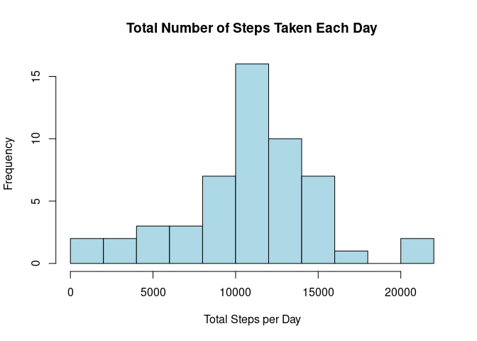
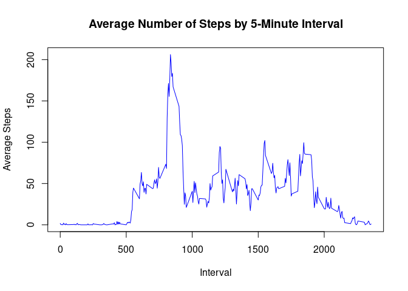
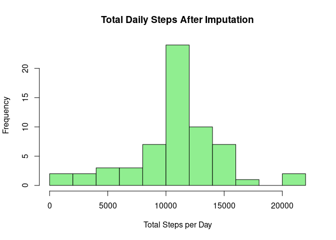
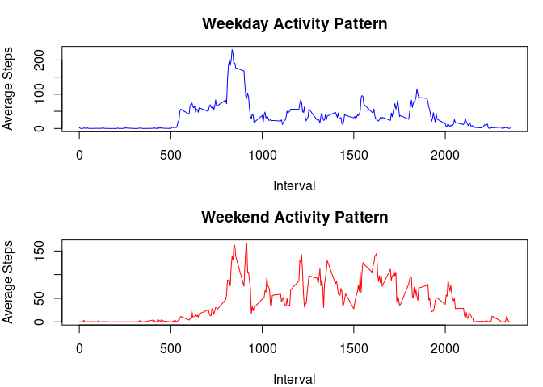

activity <- read.csv("activity.csv", na.strings = "NA")
activity$date <- as.Date(activity$date)
head(activity)## steps date interval
## 1 NA 2012-10-01 0
## 2 NA 2012-10-01 5
## 3 NA 2012-10-01 10
## 4 NA 2012-10-01 15
## 5 NA 2012-10-01 20
## 6 NA 2012-10-01 25dim(activity)## [1] 17568 3sum(is.na(activity$steps))## [1] 2304The dataset contains daily activity monitoring data. Missing values in the steps variable are represented by NA.
activity_complete <- activity[!is.na(activity$steps), ]
steps_per_day <- aggregate(
steps ~ date,
data = activity_complete,
FUN = sum
)
hist(
steps_per_day$steps,
breaks = 10,
main = "Total Number of Steps Taken Each Day",
xlab = "Total Steps per Day",
col = "lightblue"
)
mean(steps_per_day$steps)## [1] 10766.19median(steps_per_day$steps)## [1] 10765The histogram shows the distribution of total steps taken per day. The mean and median are calculated after excluding observations with missing step counts.
steps_per_interval <- aggregate(
steps ~ interval,
data = activity,
FUN = mean,
na.rm = TRUE
)
plot(
steps_per_interval$interval,
steps_per_interval$steps,
type = "l",
main = "Average Number of Steps by 5-Minute Interval",
xlab = "Interval",
ylab = "Average Steps",
col = "blue"
)
steps_per_interval[
which.max(steps_per_interval$steps),
]## interval steps
## 104 835 206.1698The time series shows the average number of steps taken during each 5-minute interval. The interval with the highest average is identified using which.max().
missing_count <- sum(is.na(activity$steps))
missing_count## [1] 2304interval_means <- aggregate(
steps ~ interval,
data = activity,
FUN = mean,
na.rm = TRUE
)
activity_imputed <- activity
missing_rows <- is.na(activity_imputed$steps)
activity_imputed$steps[missing_rows] <-
interval_means$steps[
match(
activity_imputed$interval[missing_rows],
interval_means$interval
)
]
steps_per_day_imputed <- aggregate(
steps ~ date,
data = activity_imputed,
FUN = sum
)
hist(
steps_per_day_imputed$steps,
breaks = 10,
main = "Total Daily Steps After Imputation",
xlab = "Total Steps per Day",
col = "lightgreen"
)
mean(steps_per_day_imputed$steps)## [1] 10766.19median(steps_per_day_imputed$steps)## [1] 10766.19Missing step counts are replaced with the average number of steps for the corresponding 5-minute interval, calculated from observations where steps are available. This allows all days to be included in the daily totals.
day_number <- as.POSIXlt(activity_imputed$date)$wday
activity_imputed$day_type <- factor(
ifelse(day_number %in% c(0, 6), "weekend", "weekday"),
levels = c("weekday", "weekend")
)
steps_by_day_type <- aggregate(
steps ~ interval + day_type,
data = activity_imputed,
FUN = mean
)
par(mfrow = c(2, 1), mar = c(4, 4, 3, 1))
weekday_data <- steps_by_day_type[
steps_by_day_type$day_type == "weekday",
]
plot(
weekday_data$interval,
weekday_data$steps,
type = "l",
main = "Weekday Activity Pattern",
xlab = "Interval",
ylab = "Average Steps",
col = "blue"
)
weekend_data <- steps_by_day_type[
steps_by_day_type$day_type == "weekend",
]
plot(
weekend_data$interval,
weekend_data$steps,
type = "l",
main = "Weekend Activity Pattern",
xlab = "Interval",
ylab = "Average Steps",
col = "red"
)
par(mfrow = c(1, 1))The two panels compare average activity across 5-minute intervals on weekdays and weekends.